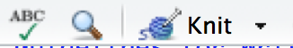

3 Lab 3: Reactor
3.1 Getting the R Markdown lab template
Begin by creating a new folder called Lab3-Reactor in your CHEM101_FirstnameLastname folder. Next, follow steps similar to those found in the GIF in Section 1.1, but select the Reactor R Markdown template instead of Light and save your file in the newly created Lab3-Reactor folder as lab3.Rmd.
3.2 The parts of the lab template
3.2.1 YAML
Refer back to The YAML header section in Chapter 1 for a review on what the entries here mean. Remember to be careful with spacing!
3.2.2 Initial R Chunk
Remember that the chemistr package automatically loads in many useful packages for you. It is loaded here in the setup chunk and will need to be loaded in order to complete the plots in this lab. It also includes functions such as chem_table you worked with in Lab 1 and chem_clustered.bar and chem_dual.scatter that you will work with in this lab.
3.2.3 Results chunk
Immediately after the ## Results header, you’ll see a chunk of code with name chunk1 corresponding to your data from part A. You will have three values for each of the four different shields you used. Thus, the material variable will contain each of the shields 3 times using the c function which combines objects together and the rep function which repeats values a specified number of times. For each shield you’ll have a corresponding element value for each of the three elements. Thus, the element vector is simply the three elements repeated 4 times. Lastly, you’ll need to enter the %T values in the value variable. The last line creates a data_frame that has 12 rows and 3 columns. You are encouraged to enter View(shield_data) in the R console AFTER you have run this chunk and the previous chunk. This will give you a glimpse into the table layout of the data frame and also allow you to make changes to your value entry as needed.
3.2.4 Clustered bar graph chunk
In chunk2, you will be producing a bar graph that allows you to look at how the different element values relate with the different shielding values in terms of %T. You also have the option to change the colors you’d like to use by entering the names in quotation marks in a named_colors vector that is passed into the chem_clustered.bar function via the colors argument. As noted in the R comments in chunk2, you can find a listing of all of the named colors in R at <http://www.stat.columbia.edu/~tzheng/files/Rcolor.pdf >.
In the GIF below, I walk through the recommended steps to download and save the template file in the appropriate location in your folder on the RStudio Server. Additionally, you’ll see what each of the different variables correspond to in the shield_data data frame and how they are plotted in the clustered bar graph.

Figure 3.1: Clustered Bar Graph
As I have in the GIF, you should use the R Console to check your results in the R chunks by either entering the R code line by line into the Console or by pressing the Run Current Chunk button (the green Play button). Additionally, you are encouraged to run all previous chunks before running the current chunk by pressing the button just to the left of the green Play button.
3.2.5 Part B data entry
In chunk3 you’ll enter data in much the same way as you did in previous labs. Here you’ll specify different values for thickness, abs, and trans. Note here that these are all numeric values and so you don’t (AND SHOULDN’T) enter them with quotes around them.
3.2.6 Dual scatter plot
In chunk4 you are presented with code to plot two vertical axis numerical variables to go with one horizontal numerical variable. Here we specify thickness as the horizontal and abs and trans as the vertical axes. This should be an extension of the work done in Lab 2 when you produced a scatterplot via the chem_scatter function.
3.2.7 The remainder of the lab
Lastly, you’ll need to provide commentary text below the Discussion header following the Exp 3 lab instructions.
3.3 Note on white space
As you look over the R Markdown document you’ll see that there is always a new line of white space between the discussion and the R chunks and also between each of the R chunks. It is highly recommended that you also follow this workflow. You’ll receive some strange errors at times if you try to stack everything together and it’s also much harder to follow for another reader of your document if you have everything bunched together. White space is your friend!
3.4 Spell-check
Just as I’m sure your English teachers have told you to spell check your documents before submitting, you are also encouraged to do so here. There is a built-in spell check option found near the Knit button.

Please run this and carefully read over your lab report before converting it to a PDF and submitting it to Moodle.
3.5 Converting your Word document to PDF
The directions for each lab on Moodle say to upload a PDF version of your lab. You’ll see how to create this PDF from inside Microsoft Word for Mac. A similar procedure can be done using LibreOffice (https://www.libreoffice.org/download/libreoffice-fresh/) on Linux, Mac, or Windows machines or Microsoft Word on a PC. You may also have the option to Save As a PDF there and you can get to this option by going to File -> Save As -> File Format: -> PDF on the Mac if you prefer.
Figure 3.2: Save as PDF on Mac from Microsoft Word
3.6 Note on requesting help
It is extremely helpful for us if you can share a link to your RStudio Project in any emails requesting help. This link is available by going to your RStudio project in the top right corner of RStudio, clicking on it and then selecting Share Project, and then select Sharing as seen in the screenshots below.


The link is given in the Project URL. Please copy this entire link into the body of your emails to Danielle or I so that we can quickly look into your errors.